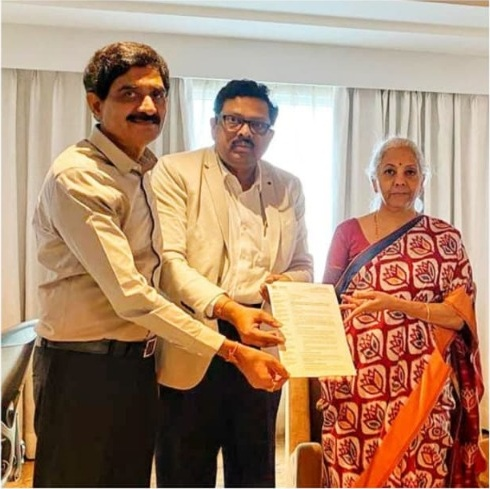

Pillar 01 · Advocacy · Field Engagements
Policy Representation & Regulatory Advocacy — ASHA in Action
Objective: A Collective Voice, Government Consultations & Field Engagements
Direct delegations before the Hon’ble Chief Minister, Union Ministers, Andhra Pradesh Tourism, and statutory authorities to advocate for classified star hotels on taxation, licensing, utility tariffs, and state infrastructure development.
ASHA Representatives Meet the Chief Minister of Andhra Pradesh
A delegation representing the Star Hotels Association of Andhra Pradesh met the Hon’ble Chief Minister to present association materials and discuss hospitality development across Andhra Pradesh.

ASHA Representatives at the Amaravati Foundation Stone-Laying Ceremony
Representatives of the Star Hotels Association of Andhra Pradesh attended the foundation stone-laying ceremony for 15 public sector banking and insurance offices in Amaravati, addressed by Union Finance Minister Smt. Nirmala Sitharaman.

Representation on Input Tax Credit (ITC) for GST to Hon'ble Tourism Minister
The Andhra Pradesh Star Hotels Association submitted a representation concerning Input Tax Credit (ITC) under GST to Hon'ble Tourism Minister Kandula Durgesh in Vijayawada, advocating for a 5% GST structure with Input Tax Credit to alleviate operational and renovation cost burdens on hotels and restaurants.
Participants: President R.V. Swamy, General Secretary S. Murthy Chittoory, Council Member Sharan V.
Outcome: Detailed memorandum submitted urging 5% GST with ITC; presented for ministerial review and state advocacy

Formal ministerial representations, statutory memorandums, and policy submissions submitted to the Government of Andhra Pradesh or statutory agencies will be documented here with dates, delegation representatives, official outcomes, and gazette references.